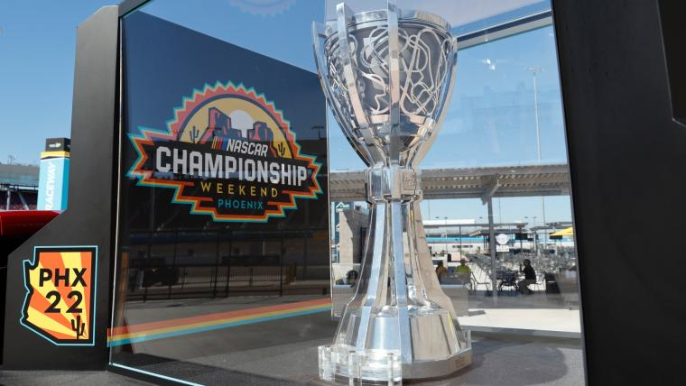

How is LeBron James still this good? Improved shooting, health among factors keeping Lakers star in elite company

Through the first 14 games of the Lakers' season, James has averaged 26.4 points, 8.2 rebounds and 6.5 assists on a sterling 58.6 percent from the field and 39.7 percent from 3. Those are far from empty stats — he's one of the most valuable players in the NBA. Per Cleaning the Glass, the Lakers play 28.4 points per 100 possessions better when he's on the floor, ranking in the 99th percentile of the league.
Yoshinobu Yamamoto posting process, explained: How star Japanese pitcher will choose MLB team

In seven seasons in NPB, Yamamoto has a 1.82 ERA across 897 innings with 922 strikeouts and a WHIP of just .935. Last year, he posted an impressive 1.16 ERA in 171 innings with 176 strikeouts, 28 walks and only 119 hits allowed.
The Last Great War: Undefeated Ohio State, Michigan meet before The Game changes in 2024

Jon Jansen provides a specific example. He started 50 games at right tackle for Michigan from 1995-98. He played 141 more games through a 12-year NFL career. Yet one game stands out above the rest. The mud, muck and memories from a Nov. 22, 1997, matchup against the Buckeyes still resonates for one visceral reason.
Shakur Stevenson vs. Edwin De Los Santos result: Stevenson claims vacant WBC lightweight title with dull decision over De Los Santos

Stevenson defeated Edwin De Los Santos by unanimous decision in a fight that was completely devoid of action over the course of 12 rounds that left fans at T-Mobile Arena disappointed.
F1 Las Vegas Grand Prix results, highlights as Max Verstappen wins Sin City race for Red Bull

Max Verstappen claimed yet another victory in Formula 1, taking the chequered flag at the highly anticipated Las Vegas Grand Prix. The world champion had to earn the win, though, fending off Ferrari's Charles Leclerc and Red Bull teammate Sergio Perez during the race.
Tiger Woods odds and props for 2023 Hero World Challenge

Tiger Woods is hosting and playing in next week's Hero World Challenge, a select 20-player tournament held in Albany, Bahamas to support his foundation.
Mexico vs Honduras score, result, highlights as El Tri qualify for Copa America on penalties in dramatic fashion

Mexico were on the verge of elimination from the CONCACAF Nations League, where they would need to navigate a one-game playoff just to qualify for the 2024 Copa America.
NASCAR lineup at Phoenix: Starting order, pole for 2023 championship race after qualifying
The Cup Series Championship, hosted on the sun-scorched asphalt of "The Desert Oddball", offers a few gifted racers the opportunity to secure their place in the annals of NASCAR history. It tends to be an exciting affair, namely because it truly is winner-take-all. Stage points don't matter. Neither do moral victories. Whichever playoff driver finishes highest takes the Cup Series crown. Every one else? Competing for second-best. Between Ryan Blaney, Christopher Bell, William Byron and Kyle Larson, this year's championship field contains the winners of 15 different races. Sweet No. 16 could prove to be the most valuable one yet. And it all starts on Saturday with qualifying results.
WWE Elimination Chamber 2024: Date, start time, ticket details for Australian premium live event

WWE will return to Australia for the first time in almost half a decade next February, with the sports entertainment juggernaut announcing the Elimination Chamber premium live event for Perth's Optus Stadium.